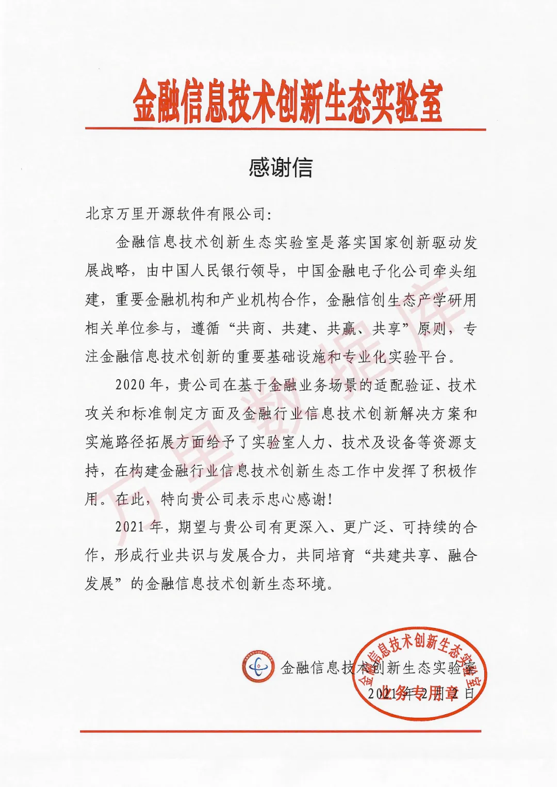

一封感谢信 | 一份认可、一份鼓励、一份荣誉
近日，万里数据库收到金融信息技术创新生态实验室（以下简称“实验室”）发来的感谢信，信中对万里数据库2020年在实验室工作中取得的成绩给予了高度肯定，同时也寄托了对公司未来更高的期许。

万里数据库作为金融信息技术创新生态实验室的成员单位，在2020年积极参与实验室相关工作，在基于金融业务场景的适配验证、技术攻关和标准制定方面及金融行业信息技术创新解决方案和实施路径拓展方面，均投入了人力、技术及设备等资源，在构建金融行业信息技术创新生态实验室工作中发挥了积极的作用。
未来，万里数据库将积极响应金融主管机构政策，与生态伙伴“共建共享、融合发展”，充分发挥在分布式数据库领域的优势，以“极致易用、极致稳定、极致性能”为核心目标，为金融信息技术创新上下游生态产业链提供优质的数据库产品和服务，助力金融科技的数字化升级。
推荐阅读1. 金融信息技术创新生态实验室成立，万里数据库助力自主可控
2. 3分钟了解万里数据库的2020
3. 万里数据库GreatDB再度发力，荣获“金鼎奖”
万里数据库简介
万里数据库是北京万里开源软件有限公司自主研发的新一代分布式数据库，经过10余年的应用验证，在功能、性能、稳定性、易用性等方面均处于行业领先水平，历经500多个业务场景的锤炼，已广泛应用于金融、能源、通信、政府、交通等多个行业。


扫码二维码
关注公众号